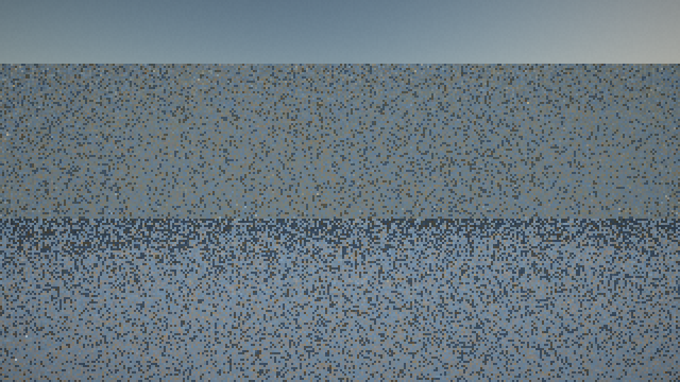
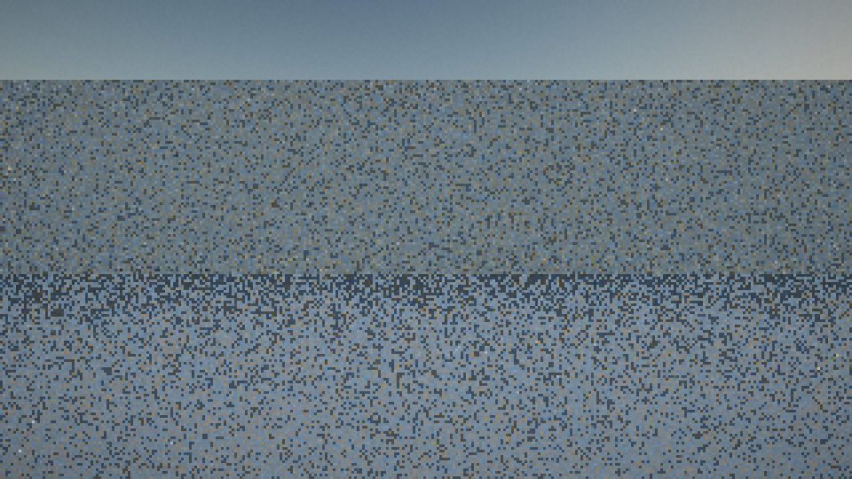
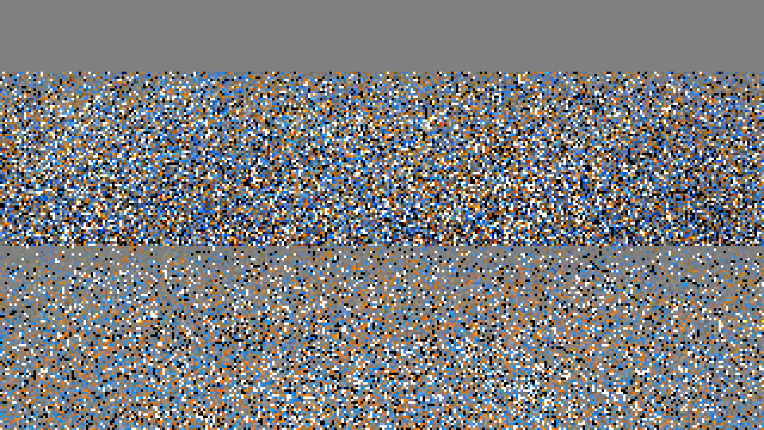

320×180, 64 frames, Project-Zero CPU reference model (the dual-region kernel, run as C++17). Same seeds, same scene, same budget. The only difference is the ReSTIR fixes.



| probe | reference | before | after | note |
|---|---|---|---|---|
| floor — direct | 0.224265 | 0.277452 | 0.282845 | single run, high-variance estimator |
| floor — indirect | 0.183124 | 0.183576 | 0.189044 | |
| floor-left — direct | 0.236056 | 0.000000 | 0.000000 | lock persists here |
| floor-left — indirect | 0.188478 | 0.188481 | 0.186064 | |
| wall — direct | 0.160219 | 0.000000 | 0.187629 | lock cleared |
| wall — indirect | 0.190484 | 0.190129 | 0.184167 |
0.000000 across all
64 frames — the reservoir locked onto an occluded sample and never escaped. The spatial-snapshot fix (patch 0016)
clears it. That is the anomaly behind the DI = 0.0000 runs in the committed
ReSTIRConvergence.txt, now caught at 5× the resolution.| build | initial | + temporal | + spatial | marginal cost |
|---|---|---|---|---|
| before | 102.60 s | 102.94 s | 103.11 s | temporal 0.34 s · spatial 0.17 s |
| after | 100.89 s | 108.94 s | 132.69 s | temporal 8.05 s · spatial 23.75 s |
The GI reconnection costs +28.7 % on the full pipeline, and +17.9 % of the frame is now the spatial pass alone (was 0.2 %). Each tap pays two bounce traces to re-evaluate the offered path at the receiver — that is what correct ReSTIR-GI reuse costs.